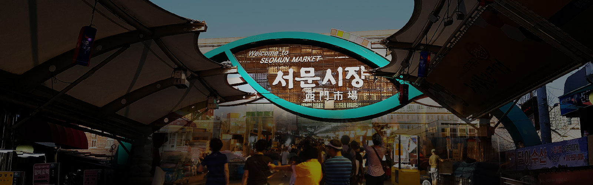
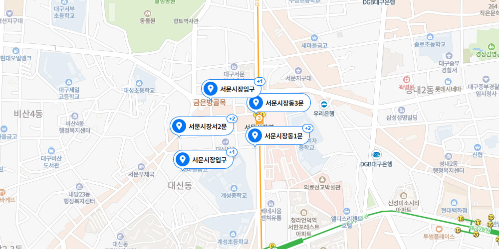

전 세계인과 함께하는
“서문시장 야시장”
서문시장 야시장은 2016년 6월에 개장한,총거리 350M에 달하는 대형 야시장입니다.우리나라 3대 시장인 서문시장의 밤거리를 무대로 하여총 80대의 매대에서 다양한 먹거리, 살거리를 판매하며 매일 저녁, 시민과 관광객에게 즐거움을 선사하는복합문화공간입니다.
특히, 먹거리 일색인 타 야시장과는 달리 먹거리, 볼거리, 즐길거리의 3대 요소가 연중으로 펼쳐지는마법같은 관광지이기도 합니다. 밤이 즐거운 대구 야행한옥 체험을 경험할 수 있는 서문 한옥 게스트하우스, 동성로와 인접한 교동게스트하우스함께 운영합니다.
연중무휴로 펼쳐지는 Fantastic Night Party!
야시장을 통한 성공적인 창업상단 육성!
서문시장 야시장은 대구의 밤문화와 다양한 첨단, 문화예술이 복합되어 어디에서도 찾을 수 없는 경험을 제공합니다. 글로벌, 퓨전 먹거리를 비롯하여 대구에서만 찾을 수 있는 독특한 음식과 우리의 추억과 감성을 자극하는 다양한 볼거리, 살거리가 즐비합니다. 대구로 방문하신다면 반드시 찾아가봐야 할 1순위는 단연 ‘서문시장 야시장’입니다.


서문시장 오시는 길
주소 : 대구 중구 큰장로26길 45
전화 : 053-256-6341
버스 : 105, 156, 242, 309, 405, 415, 623, 724, 890, 910 이용
지하철 : 2호선 신남역 5번 출구
야시장 운영시간
정기 휴무일 : 매주 화요일· 일, 월, 수, 목(19:00~22:30)
· 금, 토(19:00~23:30)
*자연재난 및 방역 대응 기준 따라 영업시간 변경 가능